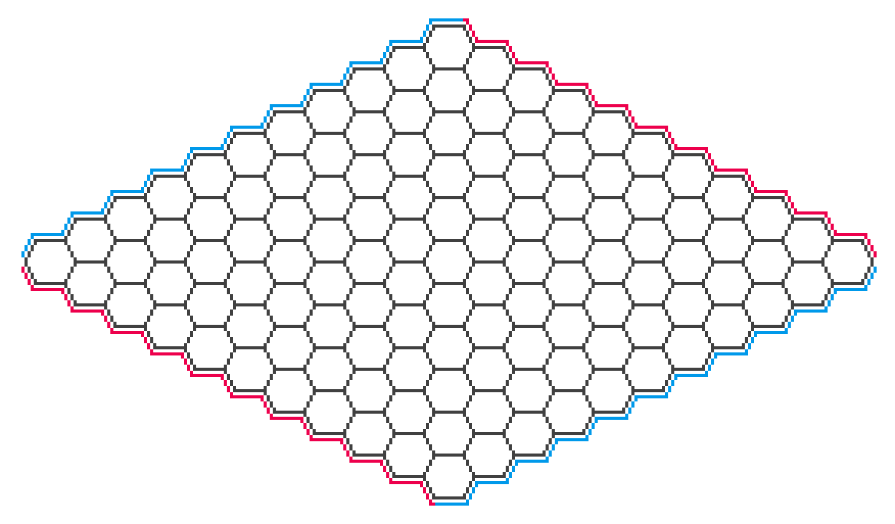
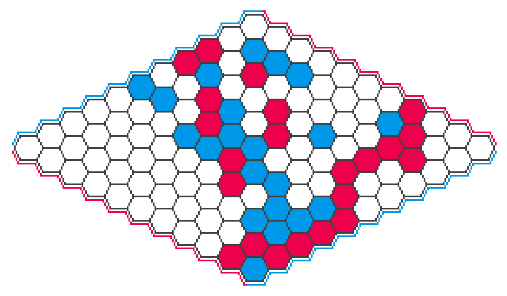

Hexbot Part 1: The 101 Unit
A brief discussion of Hex and algorithms like Monte Carlo tree search (MCTS)
This is the first post in a planned series of posts about my foray into building a bot to play Hex. The focus of this post is on Hex itself and board game algorithms more generally.
Hexbot Part 1: The 101 Unit
Hexbot Part 2: The Board and Our First Bot
Hexbot Part 3: Using Neural Networks
… More on the way!
I’ve been vaguely aware of Hex for years, but didn’t really discover it until playing it in Clubhouse Games: 51 Worldwide Classics for Nintendo Switch. I figured out rather quickly that it’s a very strategically interesting game, kind of the checkers to go’s chess.
The game takes place on a grid of hexagonal tiles arranged in a rhombus. Many sizes are possible, but is popular:

Players take turns placing pieces in unoccupied hexagons racing to be the first to make a path between the edges of their color:

That’s all the rules!1 And yet despite this simplicity, Hex has a lot of strategic depth. (I won’t go into Hex strategy here. I’m not very good at the game, and there are plenty of resources online for how to play hex including the Wikipedia article. However, if you want a taste for it, the best thing to do would be to simply try playing a few games!)
Terminology note: The choice of colors for the first and second player are a matter of convention. I’ve chosen to represent the first and second players as red and blue respectively, and I’ll use this terminology consistently throughout these posts.
The simplicity of Hex gives it a number of interesting properties that are easily shown from the rules.
Games can never end in a draw, since blocking all paths for one color requires making a complete path of the opposite color. This fact was known in 1942 by Piet Hein, the game’s inventor.
It’s known that there exists a strategy for the first player to force a win, although the specific strategy is not yet known. This fact is reflected in the strong first-player advantage in pure Hex, which is commonly corrected using a swap rule. The first written existence proof was given by John Nash in 1952, and board sizes up to 9x9 have been completely solved by computers.
The Wikipedia article and Wolfram MathWorld page for Hex have additional information. Hex has also been written about extensively in an academic context, especially in regards to game-playing AI, and there are plenty of papers and other resources that discuss aspects of Hex in great detail.
Let’s make a bot!
Making bots to play board games has always been an application of AI that fascinates me, so naturally upon encountering Hex I decided I wanted to try making a bot for it. I’ve made bots for board games before, such as for Khet (also known as Laser Chess), and most of what I’ve been doing with Hex has been essentially a further iteration of that work. (The main differences are that the Khet bots were all CPU-based, even the neural network ones, and also that my math and programming skills have grown a bit since then.)
Our ultimate goal will be to build a bot similar to AlphaZero, an MCTS-based search algorithm augmented by a neural network trained on self-play. Owing to the popularity of Hex there are already plenty of very strong bots out there, including prior art for this exact idea: KataHex, a fork of KataGo, is a popular AlphaZero-style bot for Hex. But retracing those steps is educational and fun, and what are board games about if not fun. The resulting implementation is small, hackable, and surprisingly strong.
How a computer plays a board game
Hex, like many abstract strategy games, can be thought of as tree of board positions where the edges represent moves. The root of the tree is the initial board state, and a game proceeds by descending down the move tree. This tree is enormous, making it infeasible to search exhaustively even up to a fairly shallow depth. Most algorithms still search the move tree, but use heuristics to decide which parts of the tree are worth spending time exploring. Search algorithms vary wildly, from highly complex algorithms incorporating a lot of domain knowledge, to very general ones that need no more than just an understanding of the rules.
A popular search algorithm is alpha-beta search, which traverses the move tree using a number of heuristics in order to reduce the branching factor. One such heuristic is a value function that can assign an approximate “value” for a board state, e.g. for chess by scoring material advantage. Though even simple value functions can result in good gameplay, the strength of the algorithm relies on this function’s accuracy, and necessarily incorporates domain knowledge about the game, e.g. for chess the relative value of the different pieces. Additionally, alpha-beta search performs better when visiting the most promising moves first, called move ordering, which is yet another way its performance relies on domain knowledge. While the sensitivity of alpha-beta search to domain knowledge is not by itself a problem (and indeed, strong chess programs such as Stockfish and Komodo have used this algorithm to great success), it does require the author to have some understanding about the game’s strategy.2
The most general practical search algorithm is arguably a pure Monte Carlo tree search (MCTS), where one only has to be able to take a board state and determine if it’s terminal (win/loss/draw) or enumerate all the valid moves from it. The Wikipedia article provides a good explanation of how it works, but since it forms the foundation of the AlphaZero-based model we will be implementing, it’s worth going over.
Monte Carlo tree search (MCTS)
An MCTS search is iterative, where each iteration adds a new leaf node to a game tree data structure kept in memory. The algorithm chooses where to add the node by descending the tree, choosing edges in a way that balances exploration of under-explored subtrees and exploitation of promising subtrees (from the perspective of which player is to make the given move). Upon descending to where a new leaf node is to be added, the algorithm performs a rollout (also sometimes called a “simulation”) to assign a value (win/loss/draw) to the new node: random moves are played until reaching a terminal state, which becomes the initial value of this node. This value is then propagated back up the tree, with the average value of each subtree being aggregated all the way up to the root.
These iterations can be performed as many times as desired, with each iteration adding to the amount of information available at the root node. When the search is stopped (e.g. by hitting an iteration count or computation time limit) the algorithm plays the move represented by the node with the largest visit count, i.e. the number of times the algorithm descended to that node. (Note that the node with the largest value is not chosen, but the search algorithm will visit high-value nodes many times, so this is a subtle but minor distinction.)
The reason MCTS works at all might not be immediately obvious, since valuing new leaf nodes by playing random moves to the end of the game might seem like it provides very little useful information at all. However, the idea is that each iteration descends the move tree all the way to a single terminal state, using information from previous traversals when available and random moves otherwise, then aggregates this information up the tree for later iterations. In other words each iteration of MCTS is sampling the entire move tree, with each new sample adding more detail.
Up next
In the next post, I’ll be covering the board representation and go more in depth on the baseline MCTS implementation.
An additional rule called the “swap rule” is commonly implemented as well, in order to correct for the rather significant first-player advantage. If playing with the swap rule, then after the first move the second player can choose to swap sides, thus incentivizing the first player to choose a move that is not too strong for either player.↩︎
It’s interesting to think what kind of value function and move ordering strategy could be used for a Hex bot based on alpha-beta search. Hex strategy revolves essentially entirely around positional judgement, and concepts like “material advantage” don’t exist at all. There are alpha-beta implementations for Hex and I’ll leave it as a homework assignment to go learn about what value functions they use.↩︎